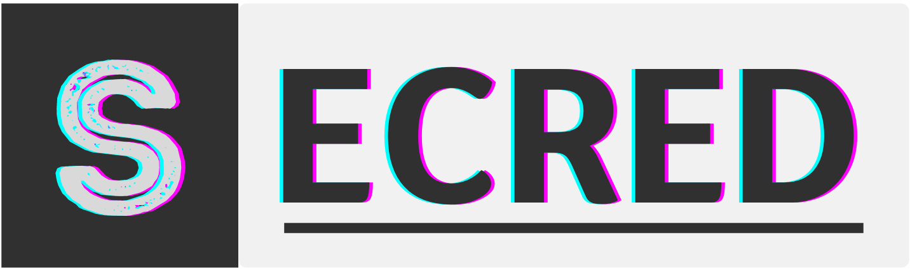

<nav class="ui-side-bar">
    <div class="logo" matRipple>
        
    </div>
    <ul class="nav-menu">
        <li class="nav-item" *ngFor="let route of routes" matRipple>
            <a class="item-link" [routerLink]="route.path" routerLinkActive="active" (click)="handleTitlePage(route.title)">
                <mat-icon class="material-icons-outlined">{{ route.icon }}</mat-icon> {{ route.name }}
            </a>
        </li>
    </ul>
    <user-logged />
</nav>